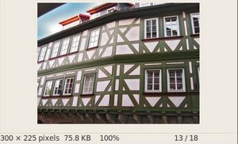

Canny Edge Detector
Goal
In this tutorial you will learn how to:
- Use the OpenCV function cv::Canny to implement the Canny Edge Detector.
Theory
The Canny Edge detector was developed by John F. Canny in 1986. Also known to many as the optimal detector, the Canny algorithm aims to satisfy three main criteria:
- Low error rate: Meaning a good detection of only existent edges.
- Good localization: The distance between edge pixels detected and real edge pixels have to be minimized.
- Minimal response: Only one detector response per edge.
Steps
Filter out any noise. The Gaussian filter is used for this purpose. An example of a Gaussian kernel of \(size = 5\) that might be used is shown below:
\[\begin{split}K = \dfrac{1}{159}\begin{bmatrix} 2 & 4 & 5 & 4 & 2 \\ 4 & 9 & 12 & 9 & 4 \\ 5 & 12 & 15 & 12 & 5 \\ 4 & 9 & 12 & 9 & 4 \\ 2 & 4 & 5 & 4 & 2 \end{bmatrix}\end{split}\]Find the intensity gradient of the image. For this, we follow a procedure analogous to Sobel:
Apply a pair of convolution masks (in \(x\) and \(y\) directions:
\[\begin{split}G_{x} = \begin{bmatrix} -1 & 0 & +1 \\ -2 & 0 & +2 \\ -1 & 0 & +1 \end{bmatrix}\end{split}\]\[\begin{split}G_{y} = \begin{bmatrix} -1 & -2 & -1 \\ 0 & 0 & 0 \\ +1 & +2 & +1 \end{bmatrix}\end{split}\]Find the gradient strength and direction with:
\[\begin{split}\begin{array}{l} G = \sqrt{ G_{x}^{2} + G_{y}^{2} } \\ \theta = \arctan(\dfrac{ G_{y} }{ G_{x} }) \end{array}\end{split}\]The direction is rounded to one of four possible angles (namely 0, 45, 90 or 135)
Non-maximum suppression is applied. This removes pixels that are not considered to be part of an edge. Hence, only thin lines (candidate edges) will remain.
Hysteresis : The final step. Canny does use two thresholds (upper and lower):
- If a pixel gradient is higher than the upper threshold, the pixel is accepted as an edge
- If a pixel gradient value is below the lower threshold, then it is rejected.
- If the pixel gradient is between the two thresholds, then it will be accepted only if it is connected to a pixel that is above the upper threshold.
Canny recommended a upper : lower ratio between 2:1 and 3:1.
For more details, you can always consult your favorite Computer Vision book.
Code
What does this program do?
- Asks the user to enter a numerical value to set the lower threshold for our Canny Edge Detector (by means of a Trackbar).
- Applies the Canny Detector and generates a mask (bright lines representing the edges on a black background).
- Applies the mask obtained on the original image and display it in a window.
The tutorial code’s is shown lines below. You can also download it from here
#include "opencv2/imgproc.hpp" #include "opencv2/imgcodecs.hpp" #include "opencv2/highgui.hpp" using namespace cv; Mat src, src_gray; Mat dst, detected_edges; int edgeThresh = 1; int lowThreshold; int const max_lowThreshold = 100; int ratio = 3; int kernel_size = 3; const char* window_name = "Edge Map"; static void CannyThreshold(int, void*) { blur( src_gray, detected_edges, Size(3,3) ); Canny( detected_edges, detected_edges, lowThreshold, lowThreshold*ratio, kernel_size ); dst = Scalar::all(0); src.copyTo( dst, detected_edges); imshow( window_name, dst ); } int main( int, char** argv ) { src = imread( argv[1], IMREAD_COLOR ); // Load an image if( src.empty() ) { return -1; } dst.create( src.size(), src.type() ); cvtColor( src, src_gray, COLOR_BGR2GRAY ); namedWindow( window_name, WINDOW_AUTOSIZE ); createTrackbar( "Min Threshold:", window_name, &lowThreshold, max_lowThreshold, CannyThreshold ); CannyThreshold(0, 0); waitKey(0); return 0; }
Explanation
Create some needed variables:
Mat src, src_gray; Mat dst, detected_edges; int edgeThresh = 1; int lowThreshold; int const max_lowThreshold = 100; int ratio = 3; int kernel_size = 3; const char* window_name = "Edge Map";
Note the following:
- We establish a ratio of lower:upper threshold of 3:1 (with the variable ratio).
- We set the kernel size of \(3\) (for the Sobel operations to be performed internally by the Canny function).
- We set a maximum value for the lower Threshold of \(100\).
Loads the source image:
src = imread( argv[1], IMREAD_COLOR ); // Load an image if( src.empty() ) { return -1; }
Create a matrix of the same type and size of src (to be dst):
dst.create( src.size(), src.type() );
Convert the image to grayscale (using the function cv::cvtColor):
cvtColor( src, src_gray, COLOR_BGR2GRAY );
Create a window to display the results:
namedWindow( window_name, WINDOW_AUTOSIZE );
Create a Trackbar for the user to enter the lower threshold for our Canny detector:
createTrackbar( "Min Threshold:", window_name, &lowThreshold, max_lowThreshold, CannyThreshold );
Observe the following:
- The variable to be controlled by the Trackbar is lowThreshold with a limit of max_lowThreshold (which we set to 100 previously)
- Each time the Trackbar registers an action, the callback function CannyThreshold will be invoked.
Let’s check the CannyThreshold function, step by step:
First, we blur the image with a filter of kernel size 3:
blur( src_gray, detected_edges, Size(3,3) );
Second, we apply the OpenCV function cv::Canny :
Canny( detected_edges, detected_edges, lowThreshold, lowThreshold*ratio, kernel_size );
where the arguments are:
- detected_edges : Source image, grayscale
- detected_edges : Output of the detector (can be the same as the input)
- lowThreshold : The value entered by the user moving the Trackbar
- highThreshold : Set in the program as three times the lower threshold (following Canny’s recommendation)
- kernel_size : We defined it to be 3 (the size of the Sobel kernel to be used internally)
We fill a dst image with zeros (meaning the image is completely black).
dst = Scalar::all(0);
Finally, we will use the function cv::Mat::copyTo to map only the areas of the image that are identified as edges (on a black background). cv::Mat::copyTo copy the src image onto dst. However, it will only copy the pixels in the locations where they have non-zero values. Since the output of the Canny detector is the edge contours on a black background, the resulting dst will be black in all the area but the detected edges.
src.copyTo( dst, detected_edges);
We display our result:
imshow( window_name, dst );
Result
After compiling the code above, we can run it giving as argument the path to an image. For example, using as an input the following image:
Moving the slider, trying different threshold, we obtain the following result:

Notice how the image is superposed to the black background on the edge regions.